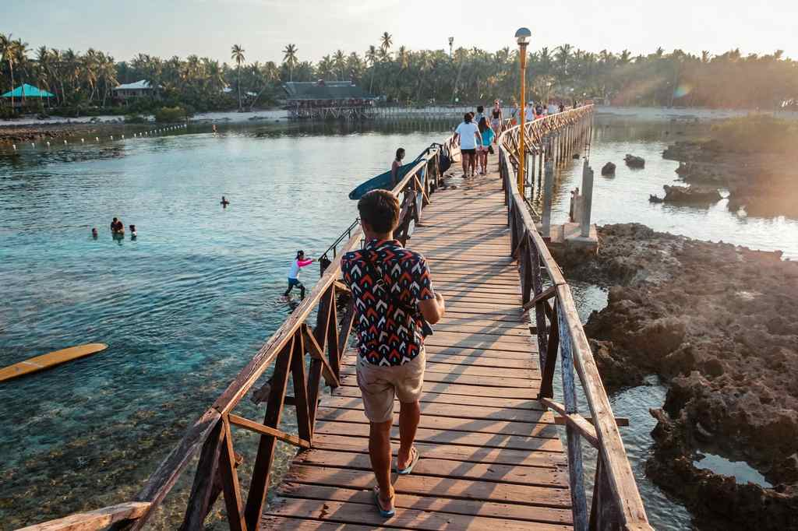

Siargao looks expensive in photos. Boutique villas, smoothie bowls and surf camps fill most of what you see online, and it is easy to assume the island needs a big budget. It doesn't. Plenty of people spend a week here on dorm beds, carinderia lunches and one good boat trip, and they still get the waves, the sunsets and the island-hopping day they came for.
Keeping costs down here comes from a handful of choices: where you sleep, how often you eat at cafés, how you get around, and which tours you actually pay for. Your biggest costs will be the flight or ferry, your room and the organised trips. Everything else is small change if you watch it.
As a working figure, plan on about ₱1,500 to ₱2,500 per person per day once you are on the island. That covers a simple room, ordinary meals and cheap local rides. Airfare, ferries, the bigger tours and shopping sit outside that number, and the real total moves with the season, room-sharing and how often you rent a scooter.

What things cost in Siargao
These are planning ranges, not set island prices. Holidays and surf events push rates up, so check before you book or pay.
The split matters more than any single price. A day of nearby beaches can cost very little, then one boat tour or surf lesson takes a bigger bite. Planning for both kinds of day keeps you from running short halfway through.
Where to stay without overpaying
- General LunaThe easiest base for a first trip, with hostels, guesthouses, food, surf shops and tour desks close together. Stay near the main road and you will pay for fewer short rides. Expect higher rates in peak weeks.
- Solo or in pairsAlone, compare dorm beds with basic guesthouses. With a partner or friend, a simple private room often works out cheaper per head than two dorm beds.
- Catangnan and MalinaoQuieter, sometimes cheaper, and a short ride out. Check the distance to the places you plan to visit, since daily rides can cancel out the saving on the room.
- Del Carmen and farther townsRooms can cost less, but for a short trip the back-and-forth to General Luna, the surf breaks and tour pick-ups eats time and money. Worth it only if your plans centre on that side of the island.
Before you book, check what is included: air-conditioning, drinking water, Wi-Fi, towels and a kitchen. A room that costs a little more can still be the better deal if it saves you buying those separately.
Eat local, and pick your café days
The café scene around General Luna is part of the fun, but eating every meal there is the quickest way to blow a budget. Treat it as a reward, not a routine.
Getting around for less
Siargao's sights are spread out, and short rides several times a day add up quicker than most people expect.
- ScooterAbout ₱350 to ₱600 a day before fuel, and good value if you ride well, hold a licence and plan several stops. Check the brakes, lights, tyres and helmet first. Wear the helmet, carry your licence and never ride after drinking. If you are new to riding, use a driver instead.
- Airport vanShared vans run from Sayak Airport in Del Carmen to General Luna in about 45 minutes to an hour. Confirm the per-person fare and your drop-off point. A private van suits groups but costs more overall.
- Shared ridesSolo travellers save by sharing a van or a ride with other guests. Ask your accommodation, and agree on the fare before setting off.
- Group your stopsCover far-off sights in one sensible loop instead of separate trips on different days.
Choose the activities worth paying for
You don't need a tour every day. Watching the surfers at Cloud 9, a lazy beach afternoon, a walk around General Luna or a slow ride along the coast and through the palm country all cost next to nothing.
- Tri-Island hoppingThe classic boat trip stops at Naked Island, Daku Island and Guyam Island. Joining a shared tour is much cheaper than hiring a boat, especially for solo travellers and couples. Ask whether the price covers lunch, boat fees, environmental charges and transfers.
- Sugba LagoonOften bundled with other stops depending on the operator and the sea. Compare full packages rather than the cheapest headline rate, and confirm the transport, boat and local fees included.
- SurfingBeginners can book a lesson with a board at one of the gentler breaks, and a good instructor will pick a spot for your level and the day's swell. If you can already surf, renting by the hour or day costs less than a lesson.
- Magpupungko Rock PoolsTime this one around low tide, when the pools are easiest to reach. Check the tide table before you ride out, follow local instructions, and carry cash for entrance and parking. Rough water is never worth a photo.
A simple rule: pick one big paid trip and one activity you really want to try, and leave the rest of the days open.
A 4-day budget plan
This plan keeps paid activities low and assumes you stay around General Luna.
Sample itinerary
Four days in Siargao on a budget
One base in General Luna, one surf day, one shared boat trip and a free last day.
4 days, 3 nightsBase: General LunaAbout ₱7k–12kScooter or shared van
-
Day 1 · Arrival
Arrive and settle in
- AfternoonShared van from Sayak Airport, check in, then buy drinking water and snacks.
- EveningA walk around General Luna, a cheap local dinner and the sunset if you land early.
Budget tip: On a late arrival, skip tours and long rides.
-
Day 2 · Surf day
Surf and General Luna
- MorningBreakfast at your guesthouse or a small eatery, then a beginner lesson or a board rental.
- AfternoonCloud 9 and the nearby coast.
- EveningLocal dinner again, not a café stop.
Budget tip: Ask the instructor which break suits your level that day.
-
Day 3 · Boat day
Tri-Island hopping
- All dayA shared boat to Naked, Daku and Guyam islands.
- EveningKeep it easy after a full day on the water.
Budget tip: Check what lunch and transfers cover before you book, and bring cash for anything extra.
-
Day 4 · Free day
Land day or beach day
- MorningMagpupungko Rock Pools if the tide suits.
- AfternoonOr a free day on quieter beaches, with no tour to pay for.
Budget tip: Flying out today? Keep it short and leave plenty of time to reach Sayak Airport.
Bring from home
SunscreenRefillable bottleToiletriesYour medicineEnough cash
What 4 days and 3 nights adds up to
This example is for one person in a dorm or simple room, eating cheaply, sharing transport and joining one shared island-hopping tour. Flights and long-distance ferries are not included.
A scooter for several days adds rental and fuel. Two people sharing a room and a bike cut the per-person cost. For a comfortable cushion, have around ₱7,000 to ₱12,000 per person for four days on the island, not counting the trip there. Skip the boat tour and you spend less; choose private rooms and restaurant dinners and you spend more.
Getting to Siargao on a budget
Siargao's airport is Sayak (IAO) in Del Carmen. Cebu and Davao have had direct flights depending on the season's schedule, while Manila travellers usually connect through Cebu or Clark. Routes change, so check the airline's current map and leave a wide gap between separate tickets. Our guide to flights and ferries to Siargao goes through the options in detail.
The slower, often cheaper route goes by sea: get to Surigao City, then take a ferry or fastcraft to Dapa Port. Cebu travellers can price an overnight ferry to Surigao plus the Dapa boat against a flight, but allow a generous connection in case a schedule slips. Count baggage, terminal rides, meals on the way and the transfer from Dapa or Sayak to your room. The ferry vs flight cost comparison shows how those extras change the maths.
More ways to save
Before you book
- Avoid the busiest weeksRooms and flights climb during holidays and surf competitions. Check event dates first.
- Book a flexible roomA low rate is no bargain if a flight change means losing the payment.
- Stay putMoving between places costs rides and half a day each time.
- Join groupsAsk about joiner tours and shared vans instead of private boats and cars.
- Carry cash, and a reserveDon't count on a working ATM the moment you need one. Withdraw early and keep emergency money separate.
- Ask what a tour includesEntrance and environmental fees, meals, transfers and gear, before you hand over money.
- Pack the basicsSunscreen, toiletries, a refillable bottle and your own medicine cost more when bought last minute in a tourist strip.
- Leave slack for weatherRain and swell can cancel boats or surf plans, so don't spend everything in the first few days.
Is Siargao worth it on a small budget?
Yes. You can have a great trip without a resort or a private tour every morning. A simple room in or near General Luna, local food, shared trips and some planning keep the cost in check.
Decide what matters most before you land. Surfers should put money into lessons or board rental. Island lovers should save for one shared boat day. If you mostly want beaches and a slower pace, explore on your own and skip the full-day tours. If you have a spare day, the karst lagoons of Bucas Grande and Sohoton Cove are close by and worth pricing as your one splurge.
Travelling cheaply here isn't about squeezing every peso. Spend on the parts you will remember, and skip the costs that add little to the trip.

Comments
No comments yet. Been here recently? Share a tip or ask a question.
Leave a Reply